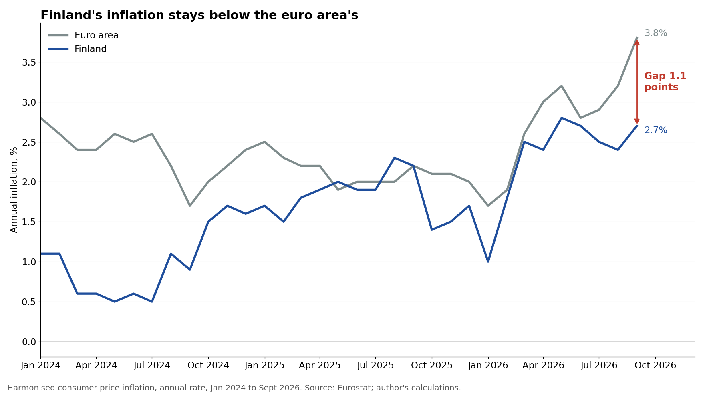
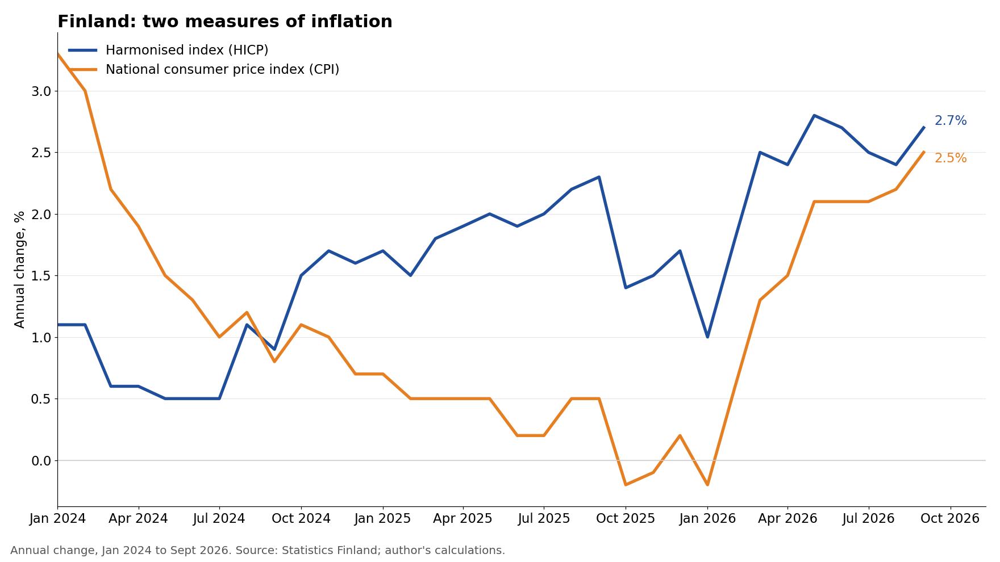
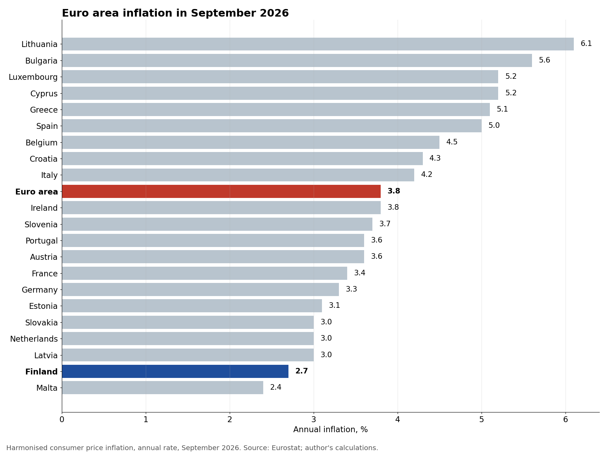

Finland's inflation cushion: 2.7% against the euro area's 3.8%
Prices in the euro area rose faster in September, with annual inflation jumping from 3.2% in August to 3.8%, according to Eurostat's release on 16 October. Finland moved too, but from a lower base and by less, since harmonised inflation was 2.7%, up from 2.4% in August, which leaves Finland 1.1 percentage points below the euro area average at a time when inflation also rose in September in the United States, the United Kingdom and Japan.
A year ago the two were level, with both Finland and the euro area at 2.2% in September 2025, so the gap has opened over the past year, and it is worth asking where it comes from and whether it will last.

Energy sets the pace
Eurostat's breakdown shows that energy added 1.71 percentage points to euro area annual inflation in September, services 1.52 points, non-energy industrial goods 0.29 points, and food, alcohol and tobacco 0.25 points, which together put energy and services at about 3.2 of the 3.8 points. That makes energy the swing factor, because when energy prices move quickly, headline inflation follows within weeks, while services move more slowly and reflect wages and demand, and a month in which energy is the biggest driver is a month in which countries with different energy systems will see different inflation numbers.
Where the cushion comes from
Statistics Finland's release on 14 October points to the same split, seen from the Finnish side, with fuels, meaning petrol, diesel and heating oils, doing most to push Finnish prices up, while electricity was among the items that held prices down the most, together with owner-occupied flats and the redemption of documents.
Finnish households feel the fuel price rise at the pump and in heating oil, like everyone else in the euro area, but in September electricity worked in the other direction, which is the core of the Finnish cushion. With energy the main engine of euro area inflation, a country where one big energy item pulls prices down will end up below the average.
Underlying inflation in Finland is also modest, since core inflation, which excludes food and energy and so leaves out the fuel price rise described above, was 1.5% in September, well below the national consumer price index, which rose 2.5% from a year earlier, up from 2.2% in August. With prices up 0.7% in a single month, the monthly jump was real, but the underlying trend is not running hot.
Two measures, one tax effect
Finland reports two inflation figures, and readers often ask why they differ, so it helps to know that the national consumer price index (2.5%) is the measure most Finns see in the news. The harmonised index (2.7%) is the one built to the same rules across the EU, which makes it the right one for comparing Finland with the euro area.
Taxes explain part of the difference, since at constant taxes Finland's harmonised inflation was 2.5%, so tax changes added 0.2 points to the September rate, and that matters for the comparison because some of what Finnish households pay more for is a policy choice, not market pressure.

Low, but not an outlier
Within the euro area, Finland is close to the bottom of the table, since of the 21 member countries only Malta, at 2.4%, had lower inflation in September, while Lithuania was highest at 6.1%, which puts Finland's 2.7% 1.1 percentage points below the euro area average of 3.8%. Across the wider EU the lowest rates were in EU countries outside the euro area, namely Sweden (1.0%) and Hungary and Denmark (both 2.1%), so Finland is low for a euro country, but it is not a European outlier.

Energy lifts prices unevenly
Finland's gap with the euro area sits inside a global picture, in which the International Monetary Fund (IMF) expects world headline inflation to rise to 4.7% in 2026 and ease to 4.1% in 2027, in its World Economic Outlook of October 2026. The Organisation for Economic Co-operation and Development (OECD) projects inflation to rise in the near term, reflecting higher commodity prices, and across its members the OECD measured inflation at 4.3% in August, with energy inflation at 13.6%.
The latest national figures show energy prices rising in most of these economies. The US Bureau of Labor Statistics reports that US consumer prices were 3.7% higher in September than a year earlier, with energy prices up 20.4%. The Office for National Statistics reports UK consumer price inflation of 3.5%, with motor fuel prices up 29.8%. The Statistics Bureau of Japan reports 2.1%, and the OECD notes that Japanese energy prices fell on the year in August because of government subsidies. Eurostat reports that euro area energy prices rose 18.9% in September, and headline inflation was 3.8%.
So Finland, at 2.7%, is 1.1 percentage points below the euro area, and also below the United States and the United Kingdom, but above Japan. Each country measures prices in its own way, so these are rough comparisons, not an exact ranking.
What the cushion means
For Finnish households, the cushion is welcome but narrow, because fuel prices are rising and a single month of helpful electricity prices does not make a trend, and if electricity turns the other way during the winter, the gap with the euro area could close quickly.
For monetary policy the picture is harder, because the European Central Bank sets one interest rate for the whole euro area and responds to the euro area average of 3.8%, not to Finland's 2.7%. So when Finnish inflation runs below the average, the common policy stance is tighter for Finland than its own price data alone would call for, and that is the normal cost of a shared currency, most visible in months like this one.
The winter test
Finnish harmonised inflation has now risen from 2.4% in August to 2.7% in September, with prices up 0.7% in a single month, and the coming months will show whether this energy jump is a short spike or the start of something more persistent.
My reading of the data is simple: Finland's lower inflation in September is mostly an energy story, and in particular an electricity story, with modest underlying inflation behind it, while fuels and taxes push the other way. The cushion is real, but it depends on the energy price that moves most, so it is worth watching month by month rather than taking for granted.
The data and code behind the charts are public on GitHub:
https://github.com/eokinyo/finland-inflation-gap-2026
Sources
- Statistics Finland, Consumer price index, September 2026 (released 14 October 2026)
- Eurostat, Euro indicators, "Annual inflation up to 3.8% in the euro area" (released 16 October 2026)
- International Monetary Fund (IMF), World Economic Outlook, October 2026 (released 13 October 2026)
- OECD, Consumer Prices, updated 6 October 2026 (released 6 October 2026)
- OECD, Economic Outlook, Interim Report, September 2026 (released 23 September 2026)
- US Bureau of Labor Statistics, Consumer Price Index, September 2026 (released 14 October 2026)
- Office for National Statistics, Consumer price inflation, UK: September 2026 (released 21 October 2026)
- Statistics Bureau of Japan, Consumer Price Index, nationwide, September 2026 (released 23 October 2026)